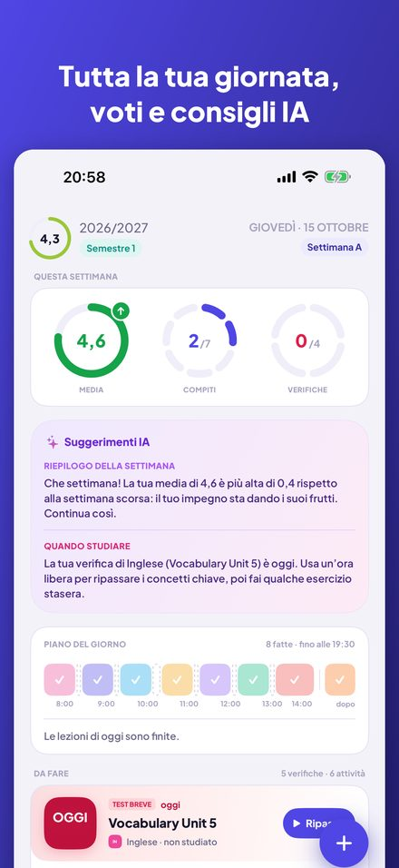
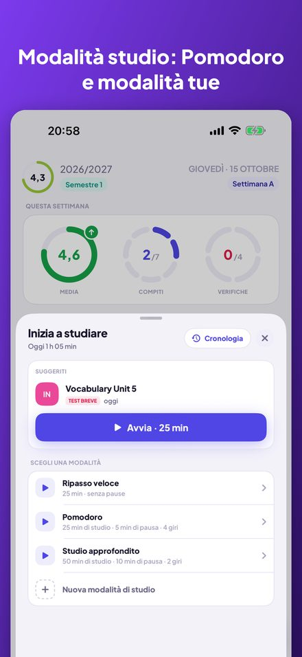
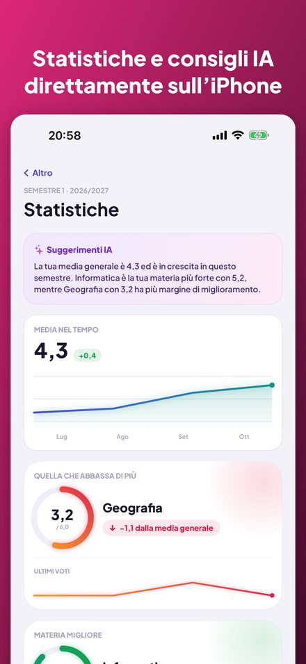
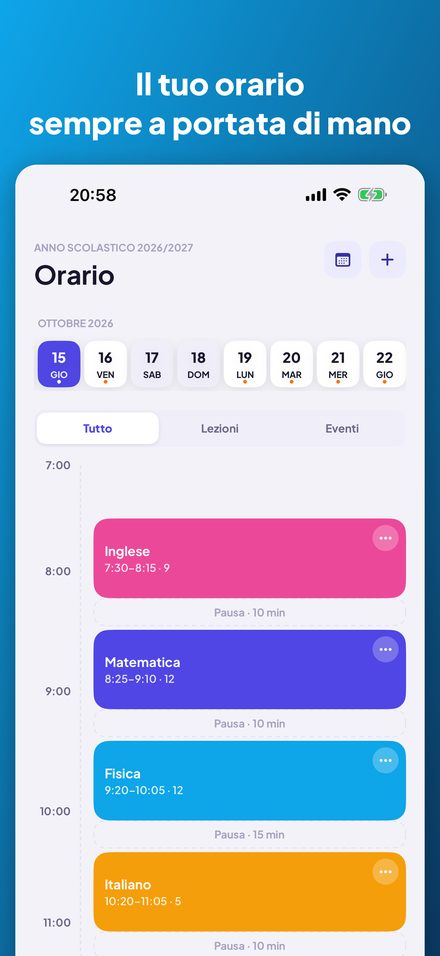
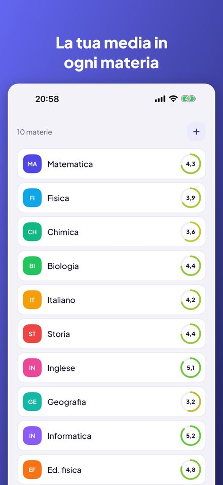
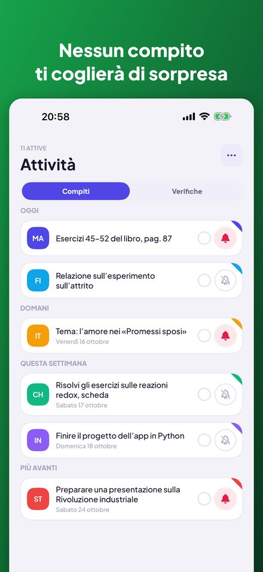

Kajet è un planner per la scuola e l’università. Tutta la giornata a colpo d’occhio, voti con media, compiti e verifiche con promemoria e un timer di studio con Pomodoro. Senza account, senza pubblicità.






Anelli con la media della settimana, i compiti e le verifiche, una linea del tempo delle lezioni di oggi e un elenco di cose da fare che spunti con un tocco.
Vista giornaliera e settimanale, settimane A e B, lezioni annullate, supplenze, cambi di aula e attività dopo la scuola con un promemoria per uscire.
Media semplice o ponderata con categorie tue, correzioni e commenti. Le statistiche mostrano la tendenza, la materia migliore e quella che ti tira giù.
Crediti ECTS, voti finali, la media ponderata sugli ECTS e la tua soglia per la borsa di studio, con i voti che ti servono ancora per raggiungerla.
Raggruppati in oggi, domani e questa settimana, con promemoria uno o tre giorni prima. Una verifica diventa un voto in un solo passaggio.
Un timer con modalità tue: conto alla rovescia o Pomodoro con giri e pause. Collega una sessione a una verifica e guarda la cronologia di studio.
La prossima lezione nella schermata Home e in quella di blocco. Chiedi a Siri la prossima lezione, i compiti di oggi o la tua media, oppure aggiungi un voto a voce.
Senza account, senza pubblicità e con i dati sul tuo iPhone. I suggerimenti IA facoltativi funzionano interamente sul dispositivo con Apple Intelligence.
Pensata per il sistema scolastico e universitario polacco (voti da 1 a 6, scala universitaria da 2,0 a 5,0, ECTS), ma utilizzabile ovunque. Disponibile in inglese, polacco, tedesco, francese, spagnolo, italiano, giapponese e cinese. Per iPhone con iOS 17 o successivo; i suggerimenti IA richiedono iOS 26 e Apple Intelligence.